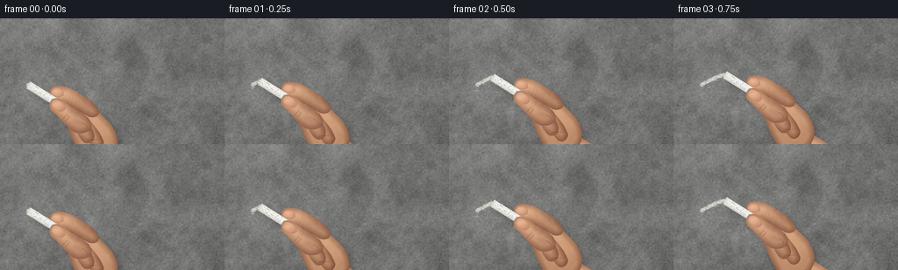
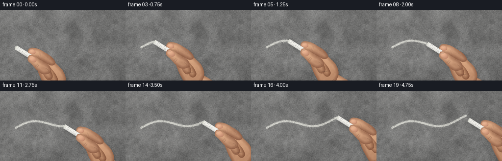

CODING AGENTS AS PIXEL WORLD MODELS
traex/GPT-6.1-Sol · mechanics_0044
点击播放 · 原生 RGB 像素
逐轮保存的候选
回放视频、检查图与代码变化。
每份候选均可单独播放。实际图片检查记录在下方工具轨迹中。
候选 01播放与检查图
点击播放 · 原生 RGB 像素


展开代码变化
--- 上一保存版本
+++ 本次保存版本
@@ -0,0 +1,265 @@
+"""Procedural RGB close-up of chalk abrading a concrete wall.
+No external assets: layered noise, shaded geometry, and cumulative deposition.
+"""
+from pathlib import Path
+import json, math
+import numpy as np
+from PIL import Image, ImageDraw, ImageFilter
+from scipy.ndimage import gaussian_filter, distance_transform_edt
+import artifact_io
+
+ROOT = Path(__file__).resolve().parent
+SPEC = json.loads((ROOT/'task_spec.json').read_text())
+W,H,N = SPEC['width'], SPEC['height'], SPEC['frames']
+S=3
+WW,HH=W*S,H*S
+rng=np.random.default_rng(4402)
+
+def noise(h,w,scale):
+ a=rng.normal(size=(max(2,int(h/scale)),max(2,int(w/scale)))).astype(np.float32)
+ a=np.asarray(Image.fromarray(a).resize((w,h),Image.Resampling.BICUBIC))
+ return a/(np.std(a)+1e-6)
+
+def bezier_path(seq, k=24):
+ out=[]; last=None
+ for item in seq:
+ if len(item)==2:
+ last=np.array(item,dtype=float); out.append(tuple(last))
+ else:
+ c1,c2,end=np.array(item).reshape(3,2)
+ for t in np.linspace(0,1,k)[1:]:
+ v=(1-t)**3*last+3*(1-t)**2*t*c1+3*(1-t)*t*t*c2+t**3*end
+ out.append(tuple(v))
+ last=end
+ return out
+
+# Continuous concrete height field: coarse mottling, sand and small air voids.
+Y,X=np.mgrid[:HH,:WW]/S
+coarse=noise(HH,WW,65)
+medium=noise(HH,WW,20)
+aggregate=noise(HH,WW,5.0)
+grain=noise(HH,WW,1.0)
+micro=rng.normal(size=(HH,WW)).astype(np.float32)
+height=0.30*aggregate+0.29*grain+0.10*micro
+hy,hx=np.gradient(gaussian_filter(height,0.5))
+light=-hx*9-hy*12
+base=111+5*coarse+3.2*medium+4.2*aggregate+4*grain+2.4*micro+light
+# Soft ambient daylight from above-left.
+base+=8*(1-X/W)+3*(1-Y/H)
+base-=6*((X-W*.43)/W)**2+5*((Y-H*.42)/H)**2
+wall=np.stack((base*1.016,base*1.015,base*1.005),axis=-1)
+# Aggregate craters with dark interiors and lit lower lips.
+for _ in range(2300):
+ x=rng.uniform(0,W); y=rng.uniform(0,H)
+ r=rng.uniform(.12,.70) if rng.random()<.95 else rng.uniform(.7,1.3)
+ l=max(0,int((x-2*r)*S)); rgt=min(WW,int((x+2*r)*S)+1)
+ top=max(0,int((y-2*r)*S)); bot=min(HH,int((y+2*r)*S)+1)
+ xx=X[top:bot,l:rgt]-x; yy=Y[top:bot,l:rgt]-y
+ pit=np.exp(-((xx/(r+.05))**2+(yy/(r*.75+.03))**2)*2)
+ lip=np.exp(-((xx/(r+.05))**2+((yy-r*.42)/(r*.5+.02))**2)*2)
+ strength=rng.uniform(4,21)
+ wall[top:bot,l:rgt,:]+=(strength*(-pit+.43*lip))[...,None]
+wall=np.clip(wall,0,255)
+wallrgb=Image.fromarray(wall.astype(np.uint8),'RGB')
+# Chalk skips the recessed pores, catching raised sand grains.
+porosity=np.clip((grain+.5*aggregate+1.2)/3,0,1)
+chalk_grain=np.clip(.67+.28*grain+.10*micro,.07,1)
+
+# Foreground hand, painted by smoothly shaded skin masks in local coordinates.
+TW,TH=150*S,146*S
+OX,OY=12,12
+ly,lx=np.mgrid[:TH,:TW]/S
+lx-=OX; ly-=OY
+skin_noise=rng.normal(size=(TH,TW)).astype(np.float32)
+skin_low=noise(TH,TW,11)
+hand=Image.new('RGBA',(TW,TH))
+
+def mask_path(seq):
+ im=Image.new('L',(TW,TH))
+ ImageDraw.Draw(im).polygon([((x+OX)*S,(y+OY)*S) for x,y in bezier_path(seq)],fill=255)
+ return np.asarray(im).astype(np.float32)/255
+
+def skin(seq,lightcenter=(50,35),spread=(35,30),tone=0):
+ mask=mask_path(seq)
+ dist=distance_transform_edt(mask>.5)/S
+ shade=np.clip(dist/7,0,1)
+ cx,cy=lightcenter; ax,ay=spread
+ sheen=np.exp(-(((lx-cx)/ax)**2+((ly-cy)/ay)**2))
+ # Contact-darkened contour and directional light, with fine pores.
+ shade=.43*shade+.35*sheen+.14*np.clip((cy-ly+30)/70,0,1)
+ dark=np.array([127,80,57]); bright=np.array([222,172,134])
+ color=dark+(bright-dark)*np.clip(shade[...,None]+.04,0,1)
+ color+=skin_noise[...,None]*1.35+skin_low[...,None]*1.5+tone
+ a=np.dstack((np.clip(color,0,255),mask*255)).astype(np.uint8)
+ hand.alpha_composite(Image.fromarray(a,'RGBA'))
+
+def strokes(paths,col=(99,58,42,55),width=.42,blur=.25):
+ im=Image.new('RGBA',(TW,TH))
+ d=ImageDraw.Draw(im)
+ for p in paths:
+ points=[((x+OX)*S,(y+OY)*S) for x,y in bezier_path(p)]
+ d.line(points,fill=col,width=max(1,round(width*S)),joint='curve')
+ if blur: im=im.filter(ImageFilter.GaussianBlur(blur*S))
+ hand.alpha_composite(im)
+
+# Wrist and palm behind the curled digits.
+skin([(60,57),(77,53,95,65,106,72),(117,79,140,91,152,101),
+ (148,134),(124,151),(101,133,81,111,72,98),(61,82,55,68,60,57)],
+ (103,95),(48,64),-1)
+skin([(48,30),(48,19,56,15,63,20),(73,24,79,30,88,39),
+ (104,53,105,70,98,80),(91,93,76,98,65,89),
+ (56,75,49,61,45,48),(42,40,43,34,48,30)],(74,44),(29,40))
+# Little and ring fingers folded into the palm.
+skin([(61,45),(59,40,66,38,71,42),(77,48,84,58,86,65),
+ (87,71,80,76,75,72),(69,67,63,54,61,45)],(70,52),(10,24),-7)
+skin([(49,34),(48,28,54,26,59,31),(66,39,72,47,75,56),
+ (77,64,71,69,64,66),(57,60,51,45,49,34)],(58,41),(11,22),1)
+skin([(39,26),(39,21,45,22,49,25),(55,30,62,38,64,44),
+ (66,49,61,56,56,55),(50,55,43,45,40,37),(37,32,37,28,39,26)],(47,33),(14,22),4)
+strokes([[(67,64),(72,62,76,62,79,63)],[(59,55),(63,51,67,51,71,53)],
+ [(54,46),(56,44,59,43,62,43)],[(75,89),(82,86,89,83,93,78)],
+ [(91,109),(96,105,102,102,107,102)]],(90,54,39,72),.6,.3)
+# Index finger, bent across the upper side of the piece of chalk.
+skin([(25,10),(24,4,29,0,36,1),(47,2,54,7,62,12),
+ (71,17,78,23,81,31),(81,36,75,39,68,36),
+ (58,31,48,23,40,21),(34,21,25,18,25,10)],(40,9),(26,12),8)
+strokes([[(49,10),(49,13,47,17,46,20)],[(51,11),(51,15,50,19,49,21)],
+ [(63,19),(65,20,68,22,69,26)],[(27,16),(30,18,33,19,37,19)]],(104,61,43,62),.4,.22)
+
+# Individual fingernails, with softly domed keratin and skin-colored margins.
+def nail(seq,center,axes):
+ m=mask_path(seq)
+ d=distance_transform_edt(m>.5)/S
+ cx,cy=center; ax,ay=axes
+ highlight=np.exp(-(((lx-cx)/ax)**2+((ly-cy)/ay)**2))
+ col=np.array([182,126,101])+highlight[...,None]*np.array([51,54,45])
+ col-=np.exp(-d[...,None]*2)*np.array([18,21,19])
+ col+=skin_noise[...,None]*.45
+ layer=Image.fromarray(np.dstack((np.clip(col,0,255),m*255)).astype(np.uint8),'RGBA')
+ hand.alpha_composite(layer)
+
+nail([(27,7),(29,3,33,3,37,5),(40,7,41,9,40,12),
+ (38,14,33,15,29,12),(27,11,26,9,27,7)],(32,7),(9,7))
+strokes([[(28,7),(28,5,31,4,34,5)]],(239,211,190,100),.6,.3)
+# Thumb presses against the near side of the chalk (added later, after chalk).
+back_hand=hand.copy()
+hand=Image.new('RGBA',(TW,TH))
+skin([(45,48),(40,44,36,38,31,33),(26,30,23,26,25,21),
+ (26,15,33,14,39,18),(45,21,51,29,60,32),
+ (69,36,75,45,71,51),(66,58,51,56,45,48)],(37,25),(24,21),9)
+nail([(27,21),(29,17,32,17,36,19),(40,21,43,25,42,28),
+ (40,31,37,32,33,29),(29,27,26,24,27,21)],(32,21),(11,9))
+strokes([[(28,22),(29,19,31,19,33,20)]],(246,218,196,110),.6,.3)
+strokes([[(45,34),(43,36,41,38,40,39)],[(47,36),(46,38,45,40,43,41)],
+ [(61,43),(64,44,67,46,67,49)]],(111,63,43,75),.5,.3)
+thumb=hand.copy()
+
+# The visible chalk cylinder, with a chipped contact face.
+chalk=Image.new('RGBA',(TW,TH))
+theta=math.radians(32)
+v=np.array([math.cos(theta),math.sin(theta)])
+n=np.array([-v[1],v[0]])
+u=lx*v[0]+ly*v[1]
+q=lx*n[0]+ly*n[1]
+radius=4.6
+start=.4+.25*np.sin(q*2.5)+.14*np.cos(q*7)
+mask=((u>=start)&(u<40)&(abs(q)<radius+.14*np.sin(u*2)))
+# Cylindrical diffusion, with a bright facing ridge and shadowed lower edge.
+shade=np.sqrt(np.clip(1-(q/radius)**2,0,1))
+bright=194+44*shade-14*q/radius
+bright+=rng.normal(0,2.6,size=(TH,TW))+noise(TH,TW,2)*1.5
+rgba=np.dstack((bright*1.012,bright*1.008,bright*.986,mask*255))
+chalk=Image.fromarray(np.clip(rgba,0,255).astype(np.uint8),'RGBA')
+# Powdery, irregular truncated worn tip.
+tip=Image.new('RGBA',(TW,TH)); td=ImageDraw.Draw(tip)
+def cp(u,q):
+ p=u*v+q*n
+ return ((p[0]+OX)*S,(p[1]+OY)*S)
+td.polygon([cp(.15,-3.7),cp(1.4,-4.5),cp(3,-3),cp(3.9,2.4),cp(1.8,4.4),cp(-.2,2.7),cp(-.3,.3)],fill=(228,228,218,255))
+for _ in range(28):
+ uu=rng.uniform(.2,3); qq=rng.uniform(-3.8,3.8)
+ x,y=cp(uu,qq); rr=rng.uniform(.10,.22)*S
+ td.ellipse((x-rr,y-rr,x+rr,y+rr),fill=(188,190,183,rng.integers(70,150).item()))
+chalk.alpha_composite(tip)
+# Short fine fissures and rubbed pale chalk ridges.
+cd=ImageDraw.Draw(chalk)
+for _ in range(36):
+ uu=rng.uniform(4,39); qq=rng.uniform(-4.2,4.2)
+ cd.line([cp(uu,qq),cp(uu+rng.uniform(.3,1.2),qq+rng.uniform(-.3,.3))],fill=(161,165,157,50),width=1)
+
+# Put the short stick between the fingers, not in front of the entire hand.
+assembly=back_hand.copy(); assembly.alpha_composite(chalk); assembly.alpha_composite(thumb)
+shadow=assembly.getchannel('A').filter(ImageFilter.GaussianBlur(3.4*S))
+# Deposit parameters are fixed in wall space, so marks persist without flicker.
+def path(s):
+ return np.array([32+151*s, 76-19*s-9*np.sin(2*np.pi*1.12*s)])
+steps=720
+ps=np.array([path(s) for s in np.linspace(0,1,steps)])
+widths=3.35+.40*np.sin(np.arange(steps)*.20)+.28*np.sin(np.arange(steps)*.49)
+mark=Image.new('L',(WW,HH))
+md=ImageDraw.Draw(mark)
+# Microscopic chalk crumbs along the permanent stroke, in stationary wall coordinates.
+deposits=[]
+for _ in range(1900):
+ s=rng.uniform(0,1); p=path(s)
+ p+=rng.normal(size=2)*np.array([.55,2.0])
+ deposits.append((s,p,rng.uniform(.06,.35),rng.uniform(35,110)))
+deposits.sort(key=lambda x:x[0])
+crumb=Image.new('L',(WW,HH)); crd=ImageDraw.Draw(crumb)
+
+def place(img,asset,p,offset=(0,0)):
+ xy=(round((p[0]-OX+offset[0])*S),round((p[1]-OY+offset[1])*S))
+ img.alpha_composite(asset,xy)
+
+frames=[]; last=0; lastcrumb=0
+for frame in range(N):
+ # Press, drag at nearly constant speed, then lift the worn chalk off the wall.
+ s=np.clip((frame-.1)/16.7,0,1)
+ end=min(steps-1,int(s*(steps-1)))
+ for k in range(last,end+1):
+ x,y=ps[k]*S; r=widths[k]*S*.5
+ md.ellipse((x-r,y-r,x+r,y+r),fill=235)
+ last=end
+ while lastcrumb<len(deposits) and deposits[lastcrumb][0]<=s:
+ _,p,r,a=deposits[lastcrumb]; x,y=p*S; r*=S
+ crd.ellipse((x-r,y-r,x+r,y+r),fill=int(a))
+ lastcrumb+=1
+ a=np.asarray(mark,dtype=np.float32)/255
+ # Uneven scraped deposits expose the concrete's tiny recesses.
+ a*=chalk_grain*(.78+.22*porosity)
+ a=gaussian_filter(a,.28)
+ crumbs=np.asarray(crumb,dtype=np.float32)/255
+ a=np.clip(a+crumbs*.7,0,.94)
+ # Very thin dust halo around the abrasion track.
+ halo=gaussian_filter(np.asarray(mark,dtype=np.float32)/255,2.7*S)*.14
+ dest=wall*(1-(a+halo*.65)[...,None])+np.array([238,238,229])*(a+halo*.65)[...,None]
+ im=Image.fromarray(np.clip(dest,0,255).astype(np.uint8),'RGB').convert('RGBA')
+ p=path(s)
+ lift=max(0,frame-17)/2
+ p+=np.array([4.7*lift,8.5*lift])
+ # Soft shadows show the contact tip against the wall, and the raised knuckles.
+ shi=Image.new('RGBA',(TW,TH),(24,24,21,0))
+ shi.putalpha(shadow.point(lambda z:int(z*.24)))
+ place(im,shi,p,(4+lift*2,5+lift*2))
+ # Small powder flecks fall downward under gravity after leaving the contact.
+ dust=Image.new('RGBA',(WW,HH)); dd=ImageDraw.Draw(dust)
+ if frame>0:
+ for j in range(max(0,frame-4),min(frame,18)):
+ prevs=np.clip((j-.1)/16.7,0,1); origin=path(prevs)
+ age=(frame-j)/4
+ drng=np.random.default_rng(1900+j)
+ for k in range(11):
+ velocity=drng.uniform(-3.5,3.5)
+ xx=origin[0]+velocity*age+drng.normal()*.9
+ yy=origin[1]+2+drng.uniform(1,5)*age+13*age*age
+ rr=drng.uniform(.11,.39)
+ alpha=int(max(0,1-age/1.7)*drng.uniform(65,180))
+ dd.ellipse(((xx-rr)*S,(yy-rr)*S,(xx+rr)*S,(yy+rr)*S),fill=(229,229,219,alpha))
+ im.alpha_composite(dust)
+ place(im,assembly,p)
+ # Restrained macro-image contrast and antialiasing at the requested size.
+ im=im.convert('RGB').resize((W,H),Image.Resampling.LANCZOS)
+ frames.append(np.asarray(im,dtype=np.uint8))
+
+artifact_io.save(np.stack(frames),ROOT)
+print('Saved',len(frames),'RGB frames to',ROOT)
可观测工具轨迹
实际执行的命令与返回图片。
命令 1exit 0
/bin/bash -lc "ls -la && cat prompt.txt && printf '\\n--- RULES ---\\n' && cat GENERATION_RULES.md && printf '\\n--- SPEC ---\\n' && cat task_spec.json"
命令 2exit 0
/bin/bash -lc "cat artifact_io.py && printf '\\n---\\n' && python - <<'PY'
import PIL,numpy
print('PIL',PIL.__version__,'numpy',numpy.__version__)
PY"命令 3exit 0
/bin/bash -lc "python - <<'PY' import scipy print(scipy.__version__) PY"
命令 4exit 0
/bin/bash -lc "cat > generate.py <<'PY'
\"\"\"Procedural RGB close-up of chalk abrading a concrete wall.
No external assets: layered noise, shaded geometry, and cumulative deposition.
\"\"\"
from pathlib import Path
import json, math
import numpy as np
from PIL import Image, ImageDraw, ImageFilter
from scipy.ndimage import gaussian_filter, distance_transform_edt
import artifact_io
ROOT = Path(__file__).resolve().parent
SPEC = json.loads((ROOT/'task_spec.json').read_text())
W,H,N = SPEC['width'], SPEC['height'], SPEC['frames']
S=3
WW,HH=W*S,H*S
rng=np.random.default_rng(4402)
def noise(h,w,scale):
a=rng.normal(size=(max(2,int(h/scale)),max(2,int(w/scale)))).astype(np.float32)
a=np.asarray(Image.fromarray(a).resize((w,h),Image.Resampling.BICUBIC))
return a/(np.std(a)+1e-6)
def bezier_path(seq, k=24):
out=[]; last=None
for item in seq:
if len(item)==2:
last=np.array(item,dtype=float); out.append(tuple(last))
else:
c1,c2,end=np.array(item).reshape(3,2)
for t in np.linspace(0,1,k)[1:]:
v=(1-t)**3*last+3*(1-t)**2*t*c1+3*(1-t)*t*t*c2+t**3*end
out.append(tuple(v))
last=end
return out
# Continuous concrete height field: coarse mottling, sand and small air voids.
Y,X=np.mgrid[:HH,:WW]/S
coarse=noise(HH,WW,65)
medium=noise(HH,WW,20)
aggregate=noise(HH,WW,5.0)
grain=noise(HH,WW,1.0)
micro=rng.normal(size=(HH,WW)).astype(np.float32)
height=0.30*aggregate+0.29*grain+0.10*micro
hy,hx=np.gradient(gaussian_filter(height,0.5))
light=-hx*9-hy*12
base=111+5*coarse+3.2*medium+4.2*aggregate+4*grain+2.4*micro+light
# Soft ambient daylight from above-left.
base+=8*(1-X/W)+3*(1-Y/H)
base-=6*((X-W*.43)/W)**2+5*((Y-H*.42)/H)**2
wall=np.stack((base*1.016,base*1.015,base*1.005),axis=-1)
# Aggregate craters with dark interiors and lit lower lips.
for _ in range(2300):
x=rng.uniform(0,W); y=rng.uniform(0,H)
r=rng.uniform(.12,.70) if rng.random()<.95 else rng.uniform(.7,1.3)
l=max(0,int((x-2*r)*S)); rgt=min(WW,int((x+2*r)*S)+1)
top=max(0,int((y-2*r)*S)); bot=min(HH,int((y+2*r)*S)+1)
xx=X[top:bot,l:rgt]-x; yy=Y[top:bot,l:rgt]-y
pit=np.exp(-((xx/(r+.05))**2+(yy/(r*.75+.03))**2)*2)
lip=np.exp(-((xx/(r+.05))**2+((yy-r*.42)/(r*.5+.02))**2)*2)
strength=rng.uniform(4,21)
wall[top:bot,l:rgt,:]+=(strength*(-pit+.43*lip))[...,None]
wall=np.clip(wall,0,255)
wallrgb=Image.fromarray(wall.astype(np.uint8),'RGB')
# Chalk skips the recessed pores, catching raised sand grains.
porosity=np.clip((grain+.5*aggregate+1.2)/3,0,1)
chalk_grain=np.clip(.67+.28*grain+.10*micro,.07,1)
# Foreground hand, painted by smoothly shaded skin masks in local coordinates.
TW,TH=150*S,146*S
OX,OY=12,12
ly,lx=np.mgrid[:TH,:TW]/S
lx-=OX; ly-=OY
skin_noise=rng.normal(size=(TH,TW)).astype(np.float32)
skin_low=noise(TH,TW,11)
hand=Image.new('RGBA',(TW,TH))
def mask_path(seq):
im=Image.new('L',(TW,TH))
ImageDraw.Draw(im).polygon([((x+OX)*S,(y+OY)*S) for x,y in bezier_path(seq)],fill=255)
return np.asarray(im).astype(np.float32)/255
def skin(seq,lightcenter=(50,35),spread=(35,30),tone=0):
mask=mask_path(seq)
dist=distance_transform_edt(mask>.5)/S
shade=np.clip(dist/7,0,1)
cx,cy=lightcenter; ax,ay=spread
sheen=np.exp(-(((lx-cx)/ax)**2+((ly-cy)/ay)**2))
# Contact-darkened contour and directional light, with fine pores.
shade=.43*shade+.35*sheen+.14*np.clip((cy-ly+30)/70,0,1)
dark=np.array([127,80,57]); bright=np.array([222,172,134])
color=dark+(bright-dark)*np.clip(shade[...,None]+.04,0,1)
color+=skin_noise[...,None]*1.35+skin_low[...,None]*1.5+tone
a=np.dstack((np.clip(color,0,255),mask*255)).astype(np.uint8)
hand.alpha_composite(Image.fromarray(a,'RGBA'))
def strokes(paths,col=(99,58,42,55),width=.42,blur=.25):
im=Image.new('RGBA',(TW,TH))
d=ImageDraw.Draw(im)
for p in paths:
points=[((x+OX)*S,(y+OY)*S) for x,y in bezier_path(p)]
d.line(points,fill=col,width=max(1,round(width*S)),joint='curve')
if blur: im=im.filter(ImageFilter.GaussianBlur(blur*S))
hand.alpha_composite(im)
# Wrist and palm behind the curled digits.
skin([(60,57),(77,53,95,65,106,72),(117,79,140,91,152,101),
(148,134),(124,151),(101,133,81,111,72,98),(61,82,55,68,60,57)],
(103,95),(48,64),-1)
skin([(48,30),(48,19,56,15,63,20),(73,24,79,30,88,39),
(104,53,105,70,98,80),(91,93,76,98,65,89),
(56,75,49,61,45,48),(42,40,43,34,48,30)],(74,44),(29,40))
# Little and ring fingers folded into the palm.
skin([(61,45),(59,40,66,38,71,42),(77,48,84,58,86,65),
(87,71,80,76,75,72),(69,67,63,54,61,45)],(70,52),(10,24),-7)
skin([(49,34),(48,28,54,26,59,31),(66,39,72,47,75,56),
(77,64,71,69,64,66),(57,60,51,45,49,34)],(58,41),(11,22),1)
skin([(39,26),(39,21,45,22,49,25),(55,30,62,38,64,44),
(66,49,61,56,56,55),(50,55,43,45,40,37),(37,32,37,28,39,26)],(47,33),(14,22),4)
strokes([[(67,64),(72,62,76,62,79,63)],[(59,55),(63,51,67,51,71,53)],
[(54,46),(56,44,59,43,62,43)],[(75,89),(82,86,89,83,93,78)],
[(91,109),(96,105,102,102,107,102)]],(90,54,39,72),.6,.3)
# Index finger, bent across the upper side of the piece of chalk.
skin([(25,10),(24,4,29,0,36,1),(47,2,54,7,62,12),
(71,17,78,23,81,31),(81,36,75,39,68,36),
(58,31,48,23,40,21),(34,21,25,18,25,10)],(40,9),(26,12),8)
strokes([[(49,10),(49,13,47,17,46,20)],[(51,11),(51,15,50,19,49,21)],
[(63,19),(65,20,68,22,69,26)],[(27,16),(30,18,33,19,37,19)]],(104,61,43,62),.4,.22)
# Individual fingernails, with softly domed keratin and skin-colored margins.
def nail(seq,center,axes):
m=mask_path(seq)
d=distance_transform_edt(m>.5)/S
cx,cy=center; ax,ay=axes
highlight=np.exp(-(((lx-cx)/ax)**2+((ly-cy)/ay)**2))
col=np.array([182,126,101])+highlight[...,None]*np.array([51,54,45])
col-=np.exp(-d[...,None]*2)*np.array([18,21,19])
col+=skin_noise[...,None]*.45
layer=Image.fromarray(np.dstack((np.clip(col,0,255),m*255)).astype(np.uint8),'RGBA')
hand.alpha_composite(layer)
nail([(27,7),(29,3,33,3,37,5),(40,7,41,9,40,12),
(38,14,33,15,29,12),(27,11,26,9,27,7)],(32,7),(9,7))
strokes([[(28,7),(28,5,31,4,34,5)]],(239,211,190,100),.6,.3)
# Thumb presses against the near side of the chalk (added later, after chalk).
back_hand=hand.copy()
hand=Image.new('RGBA',(TW,TH))
skin([(45,48),(40,44,36,38,31,33),(26,30,23,26,25,21),
(26,15,33,14,39,18),(45,21,51,29,60,32),
(69,36,75,45,71,51),(66,58,51,56,45,48)],(37,25),(24,21),9)
nail([(27,21),(29,17,32,17,36,19),(40,21,43,25,42,28),
(40,31,37,32,33,29),(29,27,26,24,27,21)],(32,21),(11,9))
strokes([[(28,22),(29,19,31,19,33,20)]],(246,218,196,110),.6,.3)
strokes([[(45,34),(43,36,41,38,40,39)],[(47,36),(46,38,45,40,43,41)],
[(61,43),(64,44,67,46,67,49)]],(111,63,43,75),.5,.3)
thumb=hand.copy()
# The visible chalk cylinder, with a chipped contact face.
chalk=Image.new('RGBA',(TW,TH))
theta=math.radians(32)
v=np.array([math.cos(theta),math.sin(theta)])
n=np.array([-v[1],v[0]])
u=lx*v[0]+ly*v[1]
q=lx*n[0]+ly*n[1]
radius=4.6
start=.4+.25*np.sin(q*2.5)+.14*np.cos(q*7)
mask=((u>=start)&(u<40)&(abs(q)<radius+.14*np.sin(u*2)))
# Cylindrical diffusion, with a bright facing ridge and shadowed lower edge.
shade=np.sqrt(np.clip(1-(q/radius)**2,0,1))
bright=194+44*shade-14*q/radius
bright+=rng.normal(0,2.6,size=(TH,TW))+noise(TH,TW,2)*1.5
rgba=np.dstack((bright*1.012,bright*1.008,bright*.986,mask*255))
chalk=Image.fromarray(np.clip(rgba,0,255).astype(np.uint8),'RGBA')
# Powdery, irregular truncated worn tip.
tip=Image.new('RGBA',(TW,TH)); td=ImageDraw.Draw(tip)
def cp(u,q):
p=u*v+q*n
return ((p[0]+OX)*S,(p[1]+OY)*S)
td.polygon([cp(.15,-3.7),cp(1.4,-4.5),cp(3,-3),cp(3.9,2.4),cp(1.8,4.4),cp(-.2,2.7),cp(-.3,.3)],fill=(228,228,218,255))
for _ in range(28):
uu=rng.uniform(.2,3); qq=rng.uniform(-3.8,3.8)
x,y=cp(uu,qq); rr=rng.uniform(.10,.22)*S
td.ellipse((x-rr,y-rr,x+rr,y+rr),fill=(188,190,183,rng.integers(70,150).item()))
chalk.alpha_composite(tip)
# Short fine fissures and rubbed pale chalk ridges.
cd=ImageDraw.Draw(chalk)
for _ in range(36):
uu=rng.uniform(4,39); qq=rng.uniform(-4.2,4.2)
cd.line([cp(uu,qq),cp(uu+rng.uniform(.3,1.2),qq+rng.uniform(-.3,.3))],fill=(161,165,157,50),width=1)
# Put the short stick between the fingers, not in front of the entire hand.
assembly=back_hand.copy(); assembly.alpha_composite(chalk); assembly.alpha_composite(thumb)
shadow=assembly.getchannel('A').filter(ImageFilter.GaussianBlur(3.4*S))
# Deposit parameters are fixed in wall space, so marks persist without flicker.
def path(s):
return np.array([32+151*s, 76-19*s-9*np.sin(2*np.pi*1.12*s)])
steps=720
ps=np.array([path(s) for s in np.linspace(0,1,steps)])
widths=3.35+.40*np.sin(np.arange(steps)*.20)+.28*np.sin(np.arange(steps)*.49)
mark=Image.new('L',(WW,HH))
md=ImageDraw.Draw(mark)
# Microscopic chalk crumbs along the permanent stroke, in stationary wall coordinates.
deposits=[]
for _ in range(1900):
s=rng.uniform(0,1); p=path(s)
p+=rng.normal(size=2)*np.array([.55,2.0])
deposits.append((s,p,rng.uniform(.06,.35),rng.uniform(35,110)))
deposits.sort(key=lambda x:x[0])
crumb=Image.new('L',(WW,HH)); crd=ImageDraw.Draw(crumb)
def place(img,asset,p,offset=(0,0)):
xy=(round((p[0]-OX+offset[0])*S),round((p[1]-OY+offset[1])*S))
img.alpha_composite(asset,xy)
frames=[]; last=0; lastcrumb=0
for frame in range(N):
# Press, drag at nearly constant speed, then lift the worn chalk off the wall.
s=np.clip((frame-.1)/16.7,0,1)
end=min(steps-1,int(s*(steps-1)))
for k in range(last,end+1):
x,y=ps[k]*S; r=widths[k]*S*.5
md.ellipse((x-r,y-r,x+r,y+r),fill=235)
last=end
while lastcrumb<len(deposits) and deposits[lastcrumb][0]<=s:
_,p,r,a=deposits[lastcrumb]; x,y=p*S; r*=S
crd.ellipse((x-r,y-r,x+r,y+r),fill=int(a))
lastcrumb+=1
a=np.asarray(mark,dtype=np.float32)/255
# Uneven scraped deposits expose the concrete's tiny recesses.
a*=chalk_grain*(.78+.22*porosity)
a=gaussian_filter(a,.28)
crumbs=np.asarray(crumb,dtype=np.float32)/255
a=np.clip(a+crumbs*.7,0,.94)
# Very thin dust halo around the abrasion track.
halo=gaussian_filter(np.asarray(mark,dtype=np.float32)/255,2.7*S)*.14
dest=wall*(1-(a+halo*.65)[...,None])+np.array([238,238,229])*(a+halo*.65)[...,None]
im=Image.fromarray(np.clip(dest,0,255).astype(np.uint8),'RGB').convert('RGBA')
p=path(s)
lift=max(0,frame-17)/2
p+=np.array([4.7*lift,8.5*lift])
# Soft shadows show the contact tip against the wall, and the raised knuckles.
shi=Image.new('RGBA',(TW,TH),(24,24,21,0))
shi.putalpha(shadow.point(lambda z:int(z*.24)))
place(im,shi,p,(4+lift*2,5+lift*2))
# Small powder flecks fall downward under gravity after leaving the contact.
dust=Image.new('RGBA',(WW,HH)); dd=ImageDraw.Draw(dust)
if frame>0:
for j in range(max(0,frame-4),min(frame,18)):
prevs=np.clip((j-.1)/16.7,0,1); origin=path(prevs)
age=(frame-j)/4
drng=np.random.default_rng(1900+j)
for k in range(11):
velocity=drng.uniform(-3.5,3.5)
xx=origin[0]+velocity*age+drng.normal()*.9
yy=origin[1]+2+drng.uniform(1,5)*age+13*age*age
rr=drng.uniform(.11,.39)
alpha=int(max(0,1-age/1.7)*drng.uniform(65,180))
dd.ellipse(((xx-rr)*S,(yy-rr)*S,(xx+rr)*S,(yy+rr)*S),fill=(229,229,219,alpha))
im.alpha_composite(dust)
place(im,assembly,p)
# Restrained macro-image contrast and antialiasing at the requested size.
im=im.convert('RGB').resize((W,H),Image.Resampling.LANCZOS)
frames.append(np.asarray(im,dtype=np.uint8))
artifact_io.save(np.stack(frames),ROOT)
print('Saved',len(frames),'RGB frames to',ROOT)
PY
python generate.py"命令 5exit 0
/bin/bash -lc "if command -v ffmpeg >/dev/null 2>&1; then ffmpeg -hide_banner -loglevel error -y -framerate 4 -i frames/%02d.png -c:v libx264 -preset slow -crf 18 -pix_fmt yuv420p -movflags +faststart video.mp4; fi
python - <<'PY'
from pathlib import Path
import numpy as np
from PIL import Image
p=Path('.')
a=np.load('pixels.npz')['pixels']
assert a.shape==(144,256,20)
assert len(list((p/'frames').glob('*.png')))==20
for f in sorted((p/'frames').glob('*.png')):
im=Image.open(f)
assert im.mode=='RGB' and im.size==(256,144)
print('Validated 20 RGB frames, 256Ã144 at 4 fps (5 seconds).')
for name in ['generate.py','pixels.npz','index.html','inspection.png','video.mp4']:
f=p/name
if f.exists(): print(name,f.stat().st_size,'bytes')
PY"视觉工具实际返回图片 1

保存候选 1 份；完成命令 5 次；可验证图片返回 1 张。原始 API 响应与完整日志保留在本地。